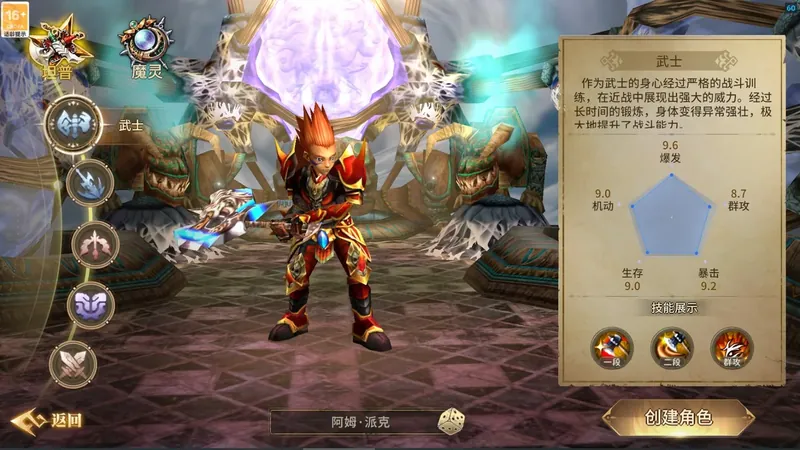
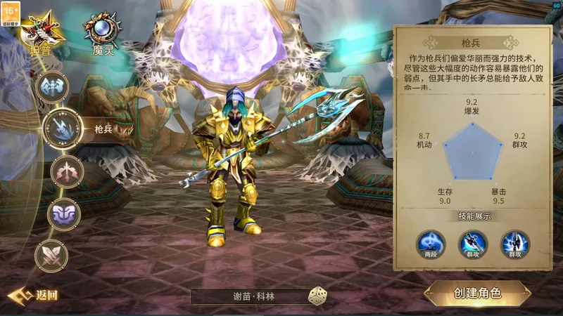
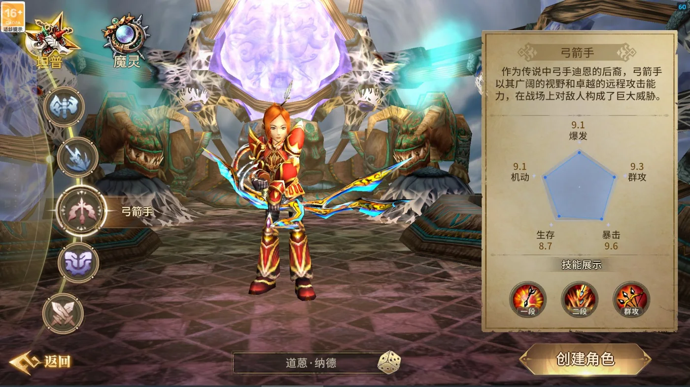
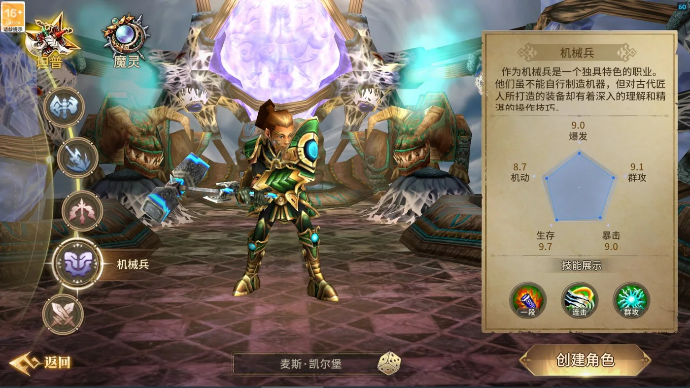
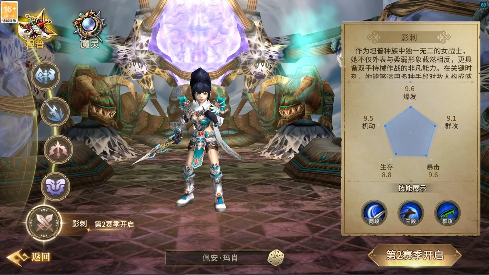
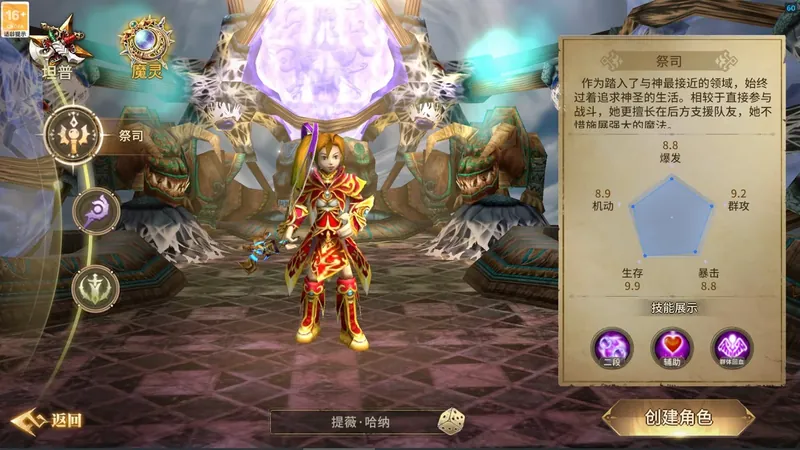
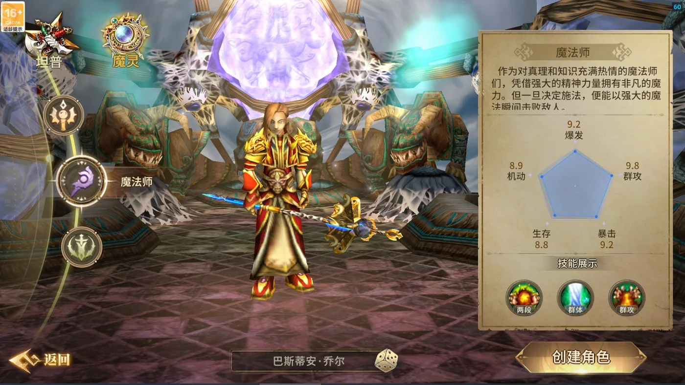
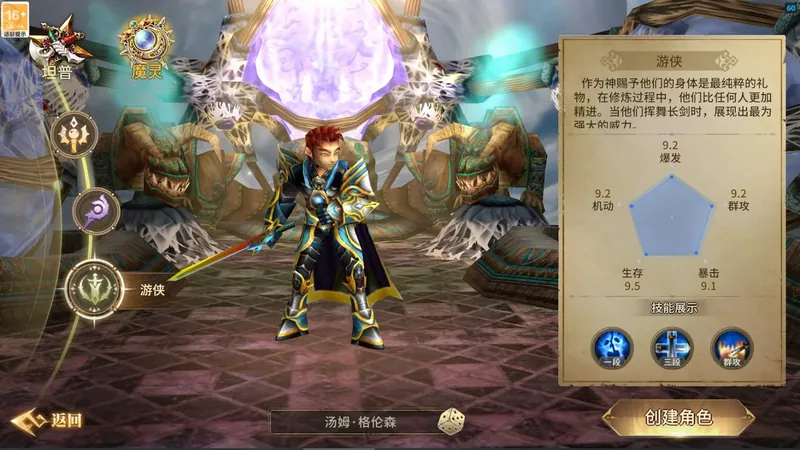

放大武士近战 · 全能输出
- 爆发9.6
- 群攻8.7
- 暴击9.2
- 生存9.0
- 机动9.0
作为武士的身心经过严格的战斗训练，在近战中展现出强大的威力。经过长时间的锻炼，身体变得异常强壮，极大地提升了战斗能力。
一段二段群攻
怀旧精灵 · 3D MMO · 收录 12 篇攻略
怀旧精灵3D MMO：精灵切换配队、技能把控定胜负，摆摊打金、圣物养成，三端互通。第二赛季圣物系统解锁后战力大幅提升，开荒期基础材料最值钱。
五维数值取自游戏内「创建角色」的职业面板（满分 10）；点截图可看大图

放大作为武士的身心经过严格的战斗训练，在近战中展现出强大的威力。经过长时间的锻炼，身体变得异常强壮，极大地提升了战斗能力。

放大枪兵偏爱华丽而强力的技术，尽管这些大幅度的动作容易暴露他们的弱点，但其手中的长矛总能给予敌人致命一击。

放大作为传说中弓手迪恩的后裔，弓箭手以其广阔的视野和卓越的远程攻击能力，在战场上对敌人构成了巨大威胁。

放大机械兵是一个独具特色的职业。他们虽不能自行制造机器，但对古代匠人所打造的装备却有着深入的理解和精湛的操作技巧。

放大作为坦普种族中独一无二的女战士，她不仅外表与柔弱形象截然相反，更具备双手持械作战的非凡能力。在关键时刻，她能够运用多种手段对敌人构成威胁。

放大踏入了与神最接近的领域，始终过着追求神圣的生活。相较于直接参与战斗，她更擅长在后方支援队友。

放大对真理和知识充满热情的魔法师们，凭借强大的精神力量拥有非凡的魔力。一旦决定施法，便能以强大的魔法瞬间击倒敌人。

放大神赐予他们的身体是最纯粹的礼物，在修炼过程中，他们比任何人更加精进。当他们挥舞长剑时，展现出最强大的威力。
客服一对一发下载链接与专属礼包 · 本页已被逛过 — 次